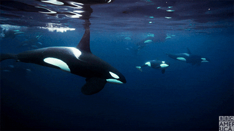

Thank you for coming over.
OMORI OST (122) - Whitespace
here i come sandfrasiscoooo

non-clickable gif. enjoy.
Small oc sneekpeek until i can code list's in.
~OC LIST~
Midesei Aeliv
Marshy
Maeth
Ayedemir
🎵 Music: Off